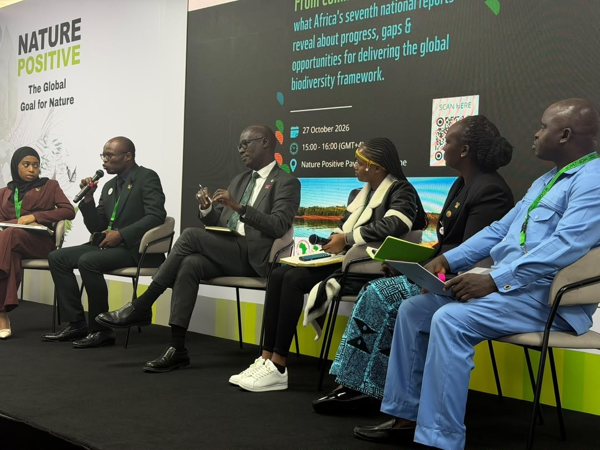

CBD COP17: Why African countries struggle to mobilise biodiversity funding – AfDB official

African governments should make biodiversity conservation a central part of national investment priorities and provide resources to carry out commitments, African Development Bank (AfDB) official Arona Soumare said during a discussion on the sidelines of CBD COP17 in Yerevan, Armenia. Soumare, the bank’s Chief Climate Change and Green Growth Officer, said countries often approach development financiers for other priorities, with biodiversity treated as an additional element rather than a main investment objective.
The panel, organised by the World Wide Fund for Nature, examined findings from Africa’s seventh national reports on progress and gaps in delivering the Global Biodiversity Framework. Soumare said governments needed to move beyond commitments under the Kunming-Montreal Global Biodiversity Framework and show their intent through concrete funding and investment decisions. He said the bank had received many biodiversity project proposals from external organisations, while strong proposals led by African governments were less common.
Soumare described the fragmentation of funding across development sectors as a major obstacle. The AfDB works with countries through Country Strategy Papers, which set out national development priorities and help shape the bank’s investment portfolios. He said biodiversity should be integrated into those priorities alongside areas such as infrastructure, food security and livelihoods, rather than handled separately. Madagascar, he said, offered an example of how country allocations could support private-sector initiatives for national parks and help attract further finance.
He called for financing that could serve both large conservation programmes and smaller community-led projects. While the bank offers funding opportunities to grassroots organisations, available resources do not meet demand: Soumare said a call for proposals might receive enough funding for only three of every 10 applications. He also pointed to blended finance, green banks, green credit lines and nature-related bonds as ways to channel more investment into conservation.
Daniel Mukubi, of the Democratic Republic of Congo’s Ministry of Environment and Sustainable Development, also identified inadequate financing as a constraint. He said conservation competes with urgent needs including food security, energy, infrastructure and poverty reduction. Regional cooperation, he added, can help build institutional capacity. He cited training for technical experts in geographic information systems and biodiversity mapping, which could support planning for the global goal of conserving at least 30 per cent of land, inland waters and coastal and marine areas by 2030.
Source: Premium Times